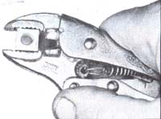
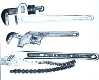
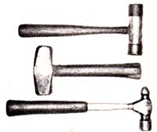
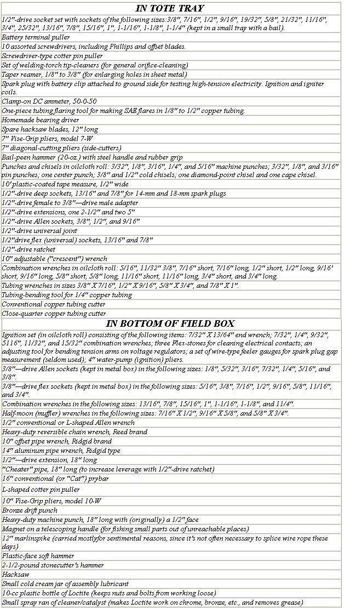
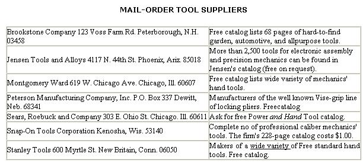

The Homesteader's Toolbox
September/October 1976
Unless you know what you're doing, shopping for tools can be a time- and money-consuming endeavor. To help you with the task, here are a few words of wisdom from Doug Richmond ... a mechanic and tool buyer of many years' experience.
As anyone who's lived on a homestead or spent any time in the back country knows all too well, today's "built to last" mechanical contrivances break down with disconcerting regularity. And when they do, someone (guess who?) must fix them.
This holds for just about any contraption-with or without moving parts-that you can think of Coleman lanterns, corn-binder pickups, push cultivators, rototillers ... you name it, and it's a leadpipe cinch that throughout the item's useful life it'll have to be repaired and/or adjusted over and over again. And of course, most of that repairing and adjusting can only be done with the aid of mechanics' hand tools.
I started my own collection of hand tools while living in a cabin on Alaska's Gravina Island. We didn't have a whole lot of mechanical devices to contend with up there in America's "last frontier", but I was forced to tinker almost daily with the weary old outboard that powered the boat we used for running errands to Ketchikan. The experience quickly taught me that quality hand tools were (and are) embarrassingly expensive and I resolved-then and there-never to buy one for which I didn't have an immediate and specific need. Over the years, as I've worked as a heavy-duty mechanic and electrician, I've kept this vow religiously ... and never regretted it. The problem most homesteaders run up against is that it's often difficult to choose-from the bewildering variety of tools on the market-exactly the right implement for the task at hand (even if it is obvious that 99.9% of those available are unsuitable for the job to be done). Yet it is important to make the correct choice, for mistakes in tool selection can be expensive.
Of course, one way out of this quandary is to buy a ready-made assortment of tools from a dealer. Anyone who goes this route, however, soon begins to suspect that the person who made up the selection got his master's degree in fruit fly genetics and doesn't know the rust thing about how to assemble a practical collection of tools.
How do you go about buying hand tools, then? This is a tough question to answer, but-as a mechanic and inveterate tool buyer with more than two decades' experience-I feel qualified to offer some advice on the subject. Here are a few suggestions:
Number one, when you first start purchasing tools study every catalog in the field that you can put your hands on. (A list of suppliers accompanies this article.) Because thousands of different types of mechanics' hand tools exist, it pays to have a good idea of what's available before you go looking for a particular item to do a given job. (ONE CAUTION: Read your catalogs with a certain amount of skepticism. The folks who write them sometimes dwell overlong on the good points of an item while completely forgetting to mention its limitations.)
You'll find that the most economical way to buy tools is to purchase them "pre-owned". Used tools depreciate about as fast as used furniture, used spacecraft, etc., yet-unlike an old sofa or a Saturn rocket-a quality wrench or screwdriver will last a lifetime if it's not grossly abused. (Some of my tools were purchased secondhand over 25 years ago and are still going strong.) Flea markets are probably your best bet for used hand tools. Beyond that, you might check auctions, swap meets, or the classified section of your paper.
The next best way to obtain tools is buy them new from one of the big mail-order houses, such as Sears, Roebuck and Co. or Montgomery Ward. Not only are Sears's and Ward's prices reasonable and their wares of good quality, but the sales personnel are extremely accommodating when it Mines to exchanging broken tools., (I've seen 1/2"-drive sockets which had obviously been ruined by heating promptly and courteously exchanged for new merchandise at a Sears store.) An extra advantage of dealing with these leviathans of the mailorder business is that you don't have to shop by mail. If-as is often the case-you need a certain tool right now, you can usually find a retail outlet close by.
After the big catalog stores, your next choice when buying new tools, I believe, should be an auto parts establishment. The main disadvantage to doing business with such firms is that many of them have very primitive inventory control, which means that they're often "fresh out" of an item when you need it the most. Also, the prices at these stores are usually a little higher than at Sears or Ward.
The absolute worst place to buy tools is from a peddler's truck (you know, the kind that drives around and stops at shops and factories). Not only are tools expensive when purchased from a vendor, but too often the driver-salesman objects loudly and strenuously to replacing a broken tool. I've seen this happen even when the implement in question was obviously defective in manufacture and-as a result-failed within a week of purchase.
No matter where you shop for tools, you'll notice that no one supplier will have all the pieces of equipment you need or want. (One firm might sell everything except hacksaw blades, while another might offer everything except socket wrenches.) On this score, Snap-On Tools Corporation seems to have the most complete line of products, with bears, Ward, and Western Auto not far behind. Of course, Snap-On-which is generally sold from a truck by a traveling vendor-is also a good bit more expensive than any of the latter three.
Which brings up another question: Does it pay to buy premium tools ... tools made by firms-such as Snap-On-that specialize in tool manufacture? The answer: in general, no. The exception to this is the occasional instance in which a certain premium tool is priced competitively with the corresponding product from a lower-priced line, or when you can't find a needed tool anywhere else but in a premium tool manufacturer's catalog.
On the other hand, it's usually bad news to buy tools out of the 98 cents jumble basket at the local lumberyard or hardware. Usually these cheapies won't hold up well enough to repair a wheelbarrow, which of course means that you don't save any money in the long-or even the short-run. (And just try asking about "replacement warranties" after you've bent the blade on a putty-pointed two-bit screwdriver!)
A final tip: Avoid special-purpose tools-the ones made to do a specific job on a certain make and model of machin-eexcept when the use of such a device is absolutely unavoidable. In most cases, a standard tool can do the job ... the special-purpose gadgets purportedly do it better, that's all.
In closing, let me restate my belief that it takes a long time-and a lot of capital-to build up a really useful collection of tools for the homestead. So go slow, buy only what you need when you need it, and insist on quality whenever you do make a purchase. Before you know it, you'll be equipped to handle any repair job on the farm.
ONE MAN'S TOOL KIT
To give you an idea of the tools that a mechanic carries in his own personal collection, here are the contents of my field box. The following assortment of hand tools will cope with almost all the mechanical repair work required to keep the average home stead operative ... and that includes everything from fixing leaky faucets to tearing down (and putting back together) Poppin-Johnny tractors. Occasionally I'll encounter a job for which I need an additional tool or two, but that's the exception ... not the rule.
THE BOX
Snap-On brand heavy-duty field toolbox-9" X 9" X 21-1/4"-with tote tray.
 Vise-Grip pliers are among the handiest tools ever made. They come in 5"", 7"", and 10"" sizes (5"" size shown). |
 Recognize these? Yep: A heavy-duty cotter pin puller and a screwdriver-type puller. |
 Three pipe wrenches. From top down: Heavy-duty aluminum model, offset pipe wrench made by Ridgid, and chain wrench (for odd-shaped objects). |
|
 Typical hammers. Top one is a plastic-face model, middle one a stonecutter's hummer, bottom a ball-peen hammer. |
 The top wrench is for copper tubing fittings (not nut-turning). Middle: The ubiquitous Combination wrench. Bottom: Half-moon wrench gets into inaccessible places. |
 |
|
 |
 |
|